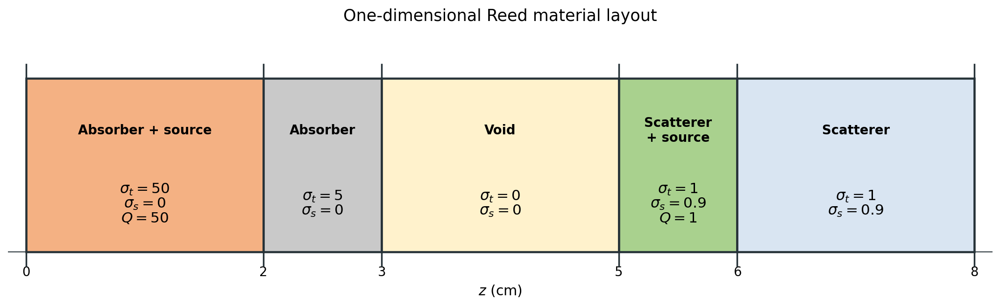
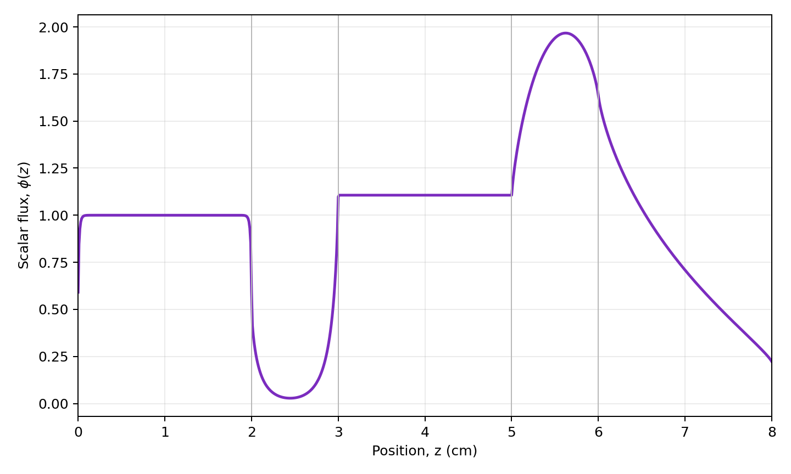

3.1.2. The One-Dimensional Reed Problem
Reed’s problem is a one-group slab-transport benchmark containing strong absorbers, a void, and scattering regions with and without sources. These abrupt material changes produce a scalar-flux profile that is useful for exercising spatial and angular discretizations. OpenSn represents a one-dimensional slab along the \(z\) axis, so the benchmark coordinate commonly written as \(x\) is denoted by \(z\) here.
3.1.2.1. Import the OpenSn objects
[ ]:
if "opensn_console" not in globals():
from mpi4py import MPI
from pyopensn.aquad import GLProductQuadrature1DSlab
from pyopensn.context import Finalize, UseColor
from pyopensn.fieldfunc import FieldFunctionInterpolationVolume
from pyopensn.logvol import RPPLogicalVolume
from pyopensn.mesh import OrthogonalMeshGenerator
from pyopensn.solver import DiscreteOrdinatesProblem, SteadyStateSourceSolver
from pyopensn.source import VolumetricSource
from pyopensn.xs import MultiGroupXS
rank = MPI.COMM_WORLD.rank
UseColor(False)
3.1.2.2. Create the slab mesh
The five regions meet at 2, 3, 5, and 6 cm. Placing mesh nodes exactly at these interfaces prevents any cell from spanning two materials. Each region contains 200 cells, matching OpenSn’s Reed regression problem.
[ ]:
region_edges = [0.0, 2.0, 3.0, 5.0, 6.0, 8.0]
cells_per_region = 200
nodes = [region_edges[0]]
for left, right in zip(region_edges[:-1], region_edges[1:]):
dz = (right - left) / cells_per_region
nodes.extend(left + i * dz for i in range(1, cells_per_region + 1))
mesh = OrthogonalMeshGenerator(node_sets=[nodes]).Execute()
mesh.SetOrthogonalBoundaries()
3.1.2.3. Define the material and source regions
The total cross section \(\sigma_t\), scattering cross section \(\sigma_s\), and isotropic source strength \(Q\) are piecewise constant:

Block ID |
Interval (cm) |
Region |
\(\sigma_t\) (cm\(^{-1}\)) |
\(\sigma_s\) (cm\(^{-1}\)) |
\(Q\) |
|---|---|---|---|---|---|
0 |
\([0,2]\) |
absorber and source |
50 |
0 |
50 |
1 |
\([2,3]\) |
absorber |
5 |
0 |
0 |
2 |
\([3,5]\) |
void |
0 |
0 |
0 |
3 |
\([5,6]\) |
scatterer and source |
1 |
0.9 |
1 |
4 |
\([6,8]\) |
scatterer |
1 |
0.9 |
0 |
CreateSimpleOneGroup accepts the scattering ratio \(c=\sigma_s/\sigma_t\). The void uses \(c=0\) because both cross sections vanish.
[ ]:
sigma_t = [50.0, 5.0, 0.0, 1.0, 1.0]
scattering_ratio = [0.0, 0.0, 0.0, 0.9, 0.9]
xs_map = []
for block_id, (left, right, total, ratio) in enumerate(
zip(region_edges[:-1], region_edges[1:], sigma_t, scattering_ratio)
):
region = RPPLogicalVolume(
infx=True, infy=True, zmin=left, zmax=right
)
mesh.SetBlockIDFromLogicalVolume(region, block_id, True)
xs = MultiGroupXS()
xs.CreateSimpleOneGroup(sigma_t=total, c=ratio)
xs_map.append({"block_ids": [block_id], "xs": xs})
absorber_source = VolumetricSource(
block_ids=[0], group_strength=[50.0]
)
scattering_source = VolumetricSource(
block_ids=[3], group_strength=[1.0]
)
3.1.2.4. Assemble and solve the transport problem
A 128-direction Gauss–Legendre quadrature resolves the angular dependence in slab geometry. Vacuum boundary conditions at both ends allow outgoing particles to leave the domain without returning.
[ ]:
quadrature = GLProductQuadrature1DSlab(
n_polar=128, scattering_order=0
)
problem = DiscreteOrdinatesProblem(
mesh=mesh,
num_groups=1,
groupsets=[
{
"groups_from_to": (0, 0),
"angular_quadrature": quadrature,
"inner_linear_method": "petsc_gmres",
"l_abs_tol": 1.0e-9,
"l_max_its": 300,
"gmres_restart_interval": 30,
}
],
xs_map=xs_map,
volumetric_sources=[absorber_source, scattering_source],
boundary_conditions=[
{"name": "zmin", "type": "vacuum"},
{"name": "zmax", "type": "vacuum"},
],
)
solver = SteadyStateSourceSolver(problem=problem)
solver.Initialize()
solver.Execute()
3.1.2.5. Verify the scalar flux
The scalar flux reaches its maximum in the source-bearing scattering region. Evaluating that maximum supplies a compact, deterministic regression check for the complete calculation.
[ ]:
scalar_flux = problem.GetScalarFluxFieldFunction()[0]
whole_domain = RPPLogicalVolume(
infx=True, infy=True, zmin=region_edges[0], zmax=region_edges[-1]
)
maximum = FieldFunctionInterpolationVolume()
maximum.SetOperationType("max")
maximum.SetLogicalVolume(whole_domain)
maximum.AddFieldFunction(scalar_flux)
maximum.Execute()
maximum_flux = maximum.GetValue()
if rank == 0:
print(f"REED_MAX_FLUX={maximum_flux:.8e}")
3.1.2.6. Plot the one-dimensional flux
FieldFunctionInterpolationLine samples the scalar flux along the slab, and ExportToCSV writes the sampled coordinates and values. The following optional plotting code is kept non-executable so regression tests do not create output files. Run it in a new code cell to regenerate the figure.
import csv
from glob import glob
import matplotlib.pyplot as plt
from pyopensn.fieldfunc import FieldFunctionInterpolationLine
from pyopensn.math import Vector3
line = FieldFunctionInterpolationLine()
line.SetInitialPoint(Vector3(0.0, 0.0, region_edges[0]))
line.SetFinalPoint(Vector3(0.0, 0.0, region_edges[-1]))
line.SetNumberOfPoints(801)
line.AddFieldFunction(scalar_flux)
line.Execute()
line.ExportToCSV("reed_flux")
if rank == 0:
csv_filename = glob("reed_flux_*.csv")[0]
with open(csv_filename, newline="") as csv_file:
rows = list(csv.DictReader(csv_file))
z = [float(row["z"]) for row in rows]
flux = [float(row["phi_g000_m00"]) for row in rows]
plt.plot(z, flux, color="#7b2cbf", linewidth=2)
for interface in region_edges[1:-1]:
plt.axvline(interface, color="0.75", linewidth=0.8)
plt.xlabel("Position, $z$ (cm)")
plt.ylabel(r"Scalar flux, $\phi(z)$")
plt.grid(alpha=0.25)
plt.tight_layout()
plt.show()

3.1.2.7. Next steps
Compare the flux after changing the number of cells or polar directions. The absorber–void interfaces make this problem particularly useful for studying spatial refinement, while the scattering regions expose changes in angular resolution.
[ ]:
if "opensn_console" not in globals():
from IPython import get_ipython
if get_ipython() is not None:
Finalize()
MPI.Finalize()